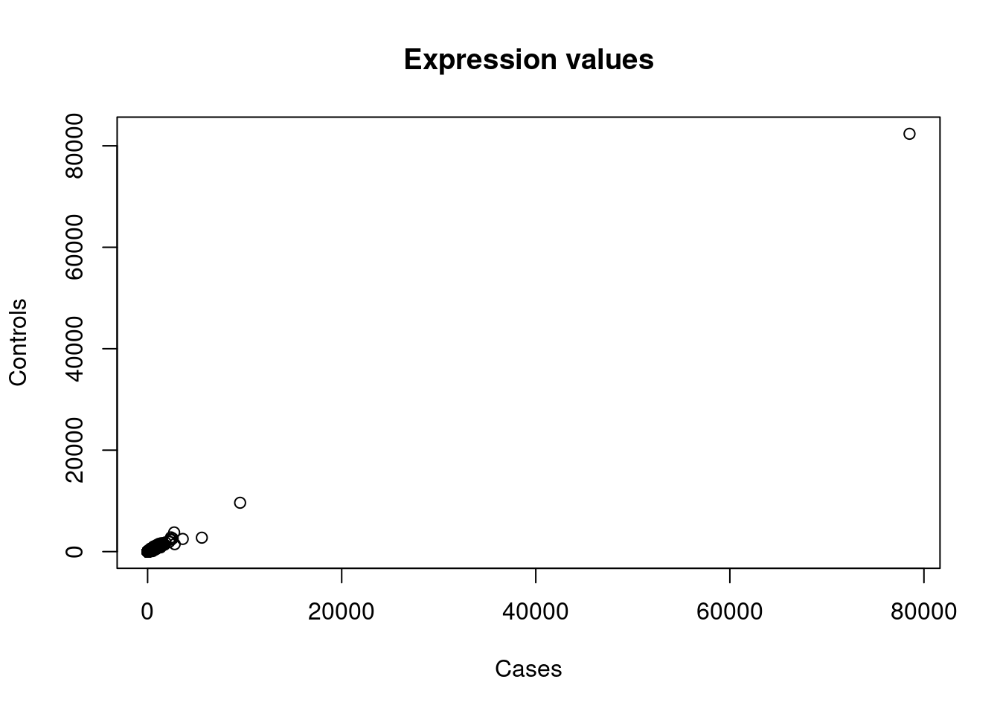
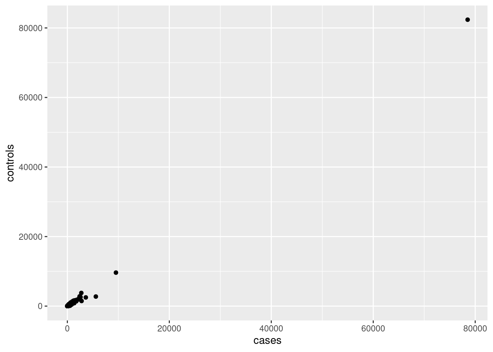
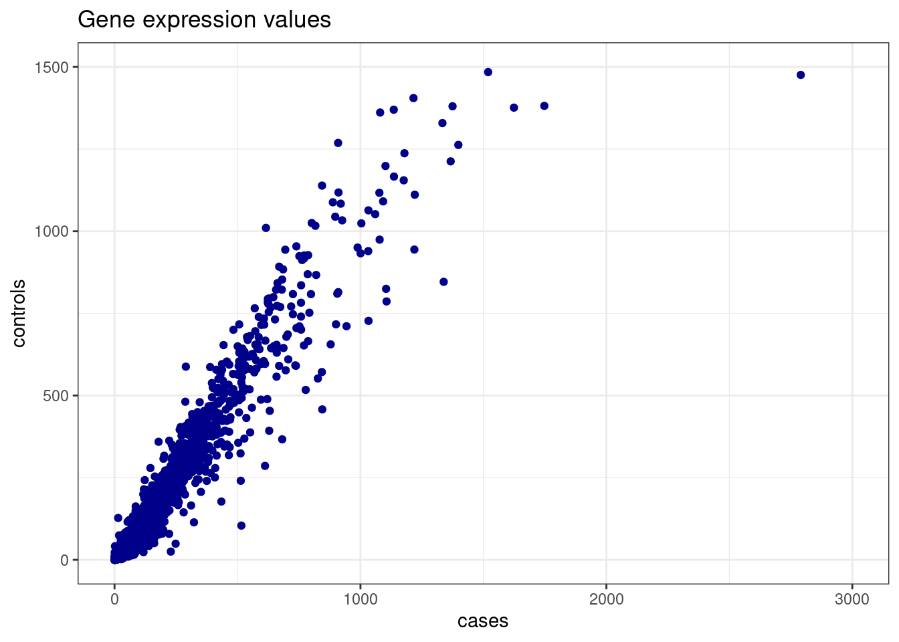
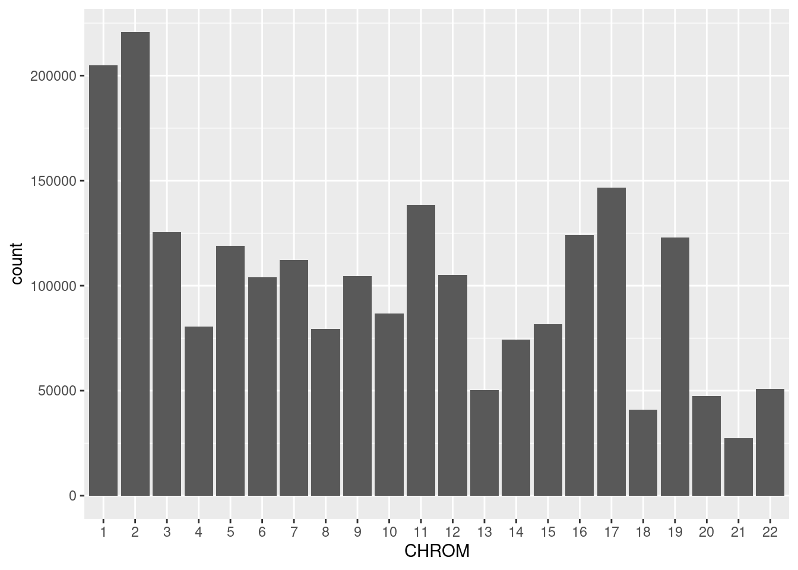
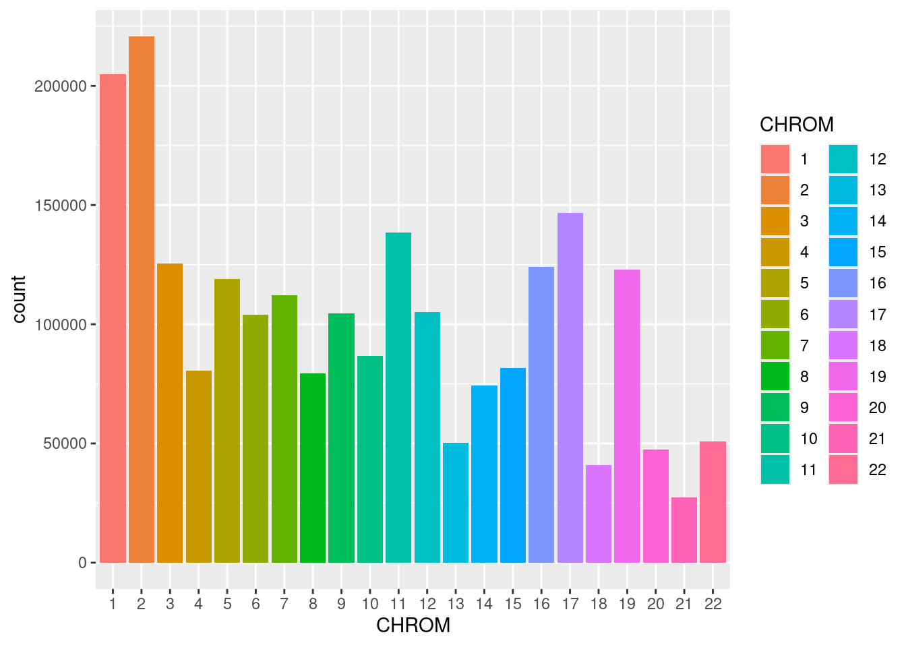
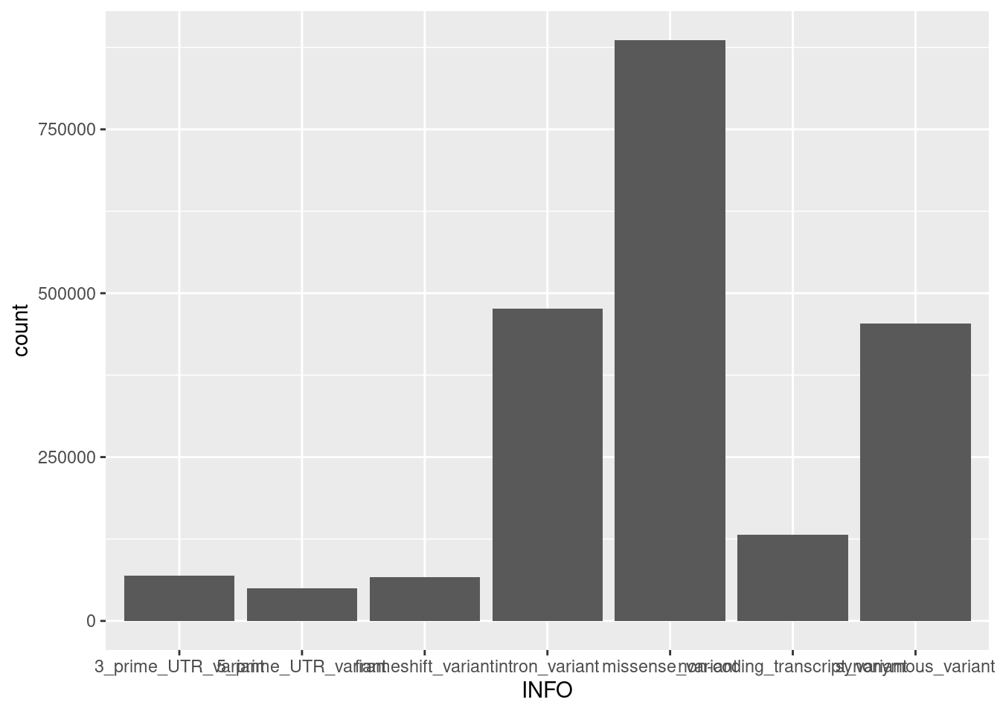
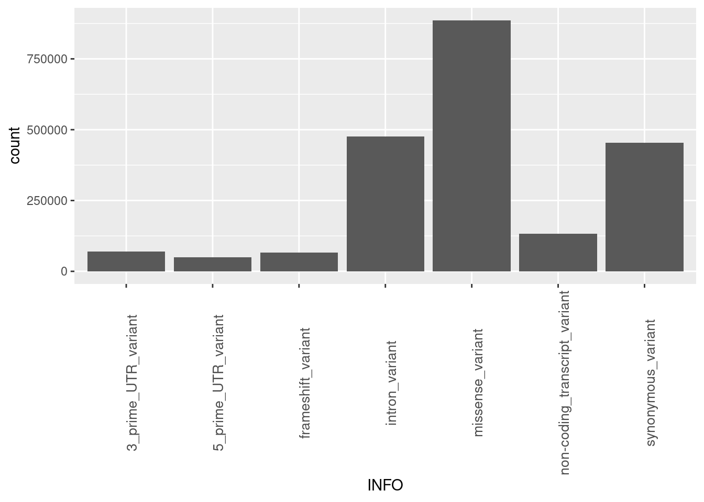
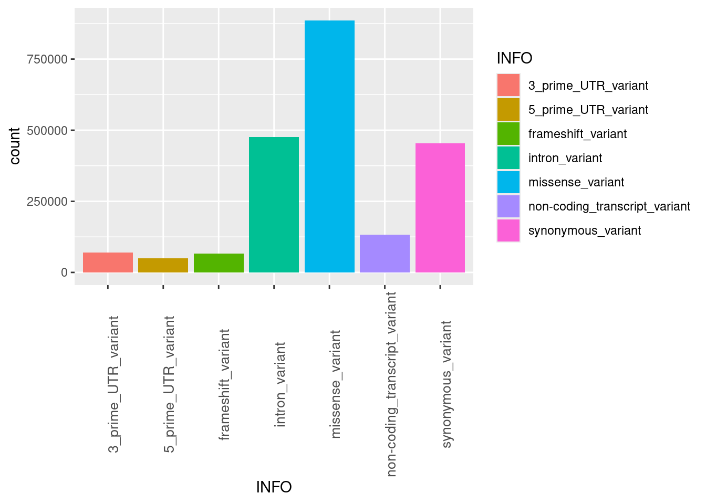
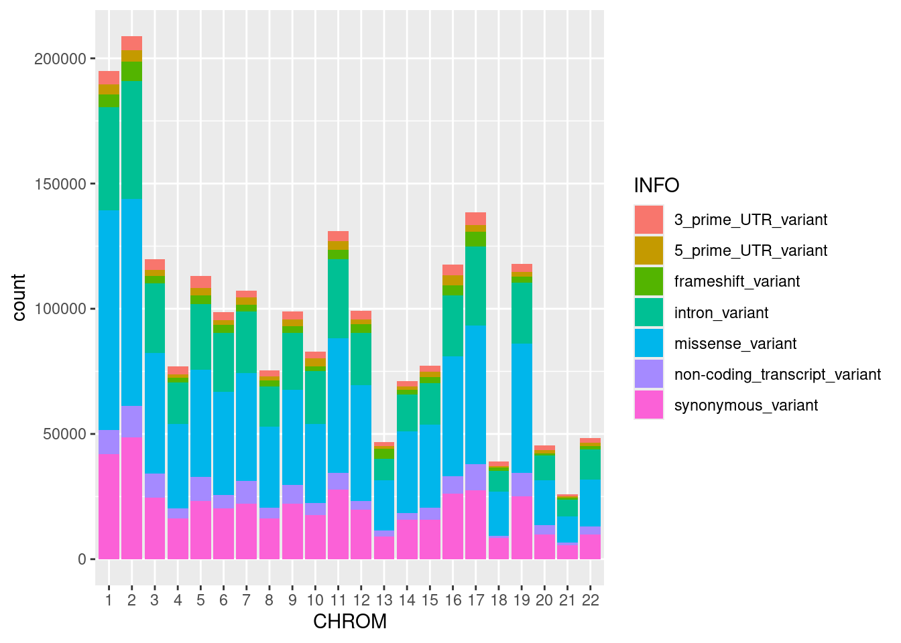
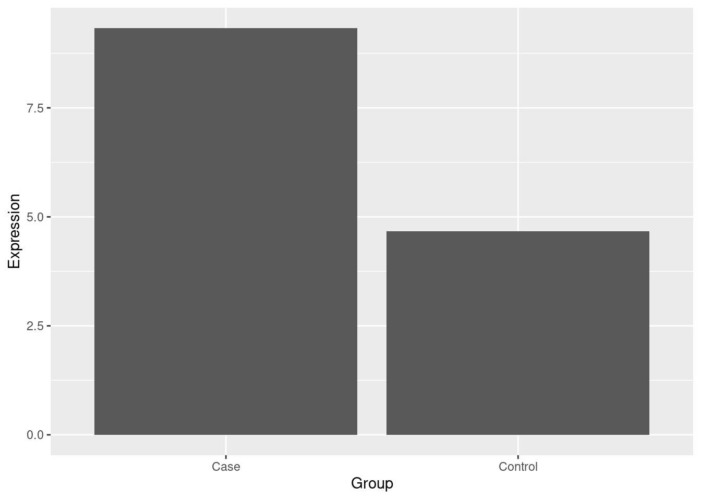

# Example: Load the "ggplot2" package
library(ggplot2)Read and plot data in R
🎯 Objective
Practice essential R skills by importing and manipulating data. Learn to read data into R using functions like read.table(), and how to explore both base graphics and ggplot2 for creating diverse and insightful visualizations. Verify your expectations against the actual output, fostering a deep understanding of data handling and visualization in R.
In all exercises during this course, it is important that you try to figure out what the expected result would be, prior to running the commands. You should then verify that this will indeed be the result by running the command. In case there is a discrepency between your expectations and the actual output make sure you understand why before you move forward. If you cannot figure out how to, or which command to run you can click the key to reveal example code including expected output.
Also note that in many cases there are multiple solutions that solve the problem equally well.
📚 Installing and Loading Libraries in RStudio
In R, a package, is a collection of functions, datasets, and other code that extends the capabilities of base R. Libraries are collections of these packages that you can easily install and use to enhance your R programming experience.
- Install a Library:
- Open RStudio and go to the Console.
- Go to the menu and choose Tools -> Install Packages…
- Start writing the name of the package you want to install to search for it
- Leave the other parameters as is
- Press Install
- Load a Library:
Once installed, use
library(package_name)to load the installed package.You only need to install a library once, but you need to load it in every R session you start.
- Verify Installation:
Verify that the library is successfully installed and loaded by running a simple function or command from the package.
packageVersion("ggplot2")[1] '4.0.2'
📝 Instructions
Read and plot gene expression data
read.table() is the by far the most common way to get data into R. As the function creates a data frame at import it will only work for data set that fits those criteria, meaning that the data needs to have a set of columns of equal length that are separated with a common string eg. tab, comma, semicolon etc.
Read this example data to R using the read.table() function. This files consist of gene expression values. Inspect the file and see if you need to change anything in the import.
ed <- read.table("https://raw.githubusercontent.com/NBISweden/workshop-r/master/data/lab_loadingdata/example.data",
sep=":")
head(ed) V1 V2 V3 V4
1 bZIP29_1 bZIP29_2 bZIP29_3 WT_1
2 <NA> 14.1671426761817 12.9727029171751 14.8181737869517
3 1.41723379939617 1.20145379585993 <NA> <NA>
4 41.8629060744716 41.1998530830302 42.6965659118674 37.528635786519
5 102.422396502516 98.3189689612045 92.0684061403395 104.210417827802
6 <NA> 4.00484598619978 3.58953430232514 3.70454344673793
V5 V6
1 WT_2 WT_3
2 <NA> <NA>
3 1.096828754225 <NA>
4 34.8492408728761 48.6456870599298
5 97.4183357161658 86.065446336799
6 2.64236018063295 6.27033804098888str(ed)'data.frame': 18946 obs. of 6 variables:
$ V1: chr "bZIP29_1" NA "1.41723379939617" "41.8629060744716" ...
$ V2: chr "bZIP29_2" "14.1671426761817" "1.20145379585993" "41.1998530830302" ...
$ V3: chr "bZIP29_3" "12.9727029171751" NA "42.6965659118674" ...
$ V4: chr "WT_1" "14.8181737869517" NA "37.528635786519" ...
$ V5: chr "WT_2" NA "1.096828754225" "34.8492408728761" ...
$ V6: chr "WT_3" NA NA "48.6456870599298" ...There seem to be some problems with this dataframe: The header line is part of the data frame itself. This makes R coerce all values in the dataframe to characters, as the first column is of the type character.
Try to fix this issue and import the file again.
ed <- read.table("https://raw.githubusercontent.com/NBISweden/workshop-r/master/data/lab_loadingdata/example.data",
sep=":", header=TRUE)
head(ed) bZIP29_1 bZIP29_2 bZIP29_3 WT_1 WT_2 WT_3
1 NA 14.167143 12.972703 14.818174 NA NA
2 1.417234 1.201454 NA NA 1.096829 NA
3 41.862906 41.199853 42.696566 37.528636 34.849241 48.645687
4 102.422397 98.318969 92.068406 104.210418 97.418336 86.065446
5 NA 4.004846 3.589534 3.704543 2.642360 6.270338
6 8.230858 17.871625 14.924906 7.999666 NA NAstr(ed)'data.frame': 18945 obs. of 6 variables:
$ bZIP29_1: num NA 1.42 41.86 102.42 NA ...
$ bZIP29_2: num 14.2 1.2 41.2 98.3 4 ...
$ bZIP29_3: num 12.97 NA 42.7 92.07 3.59 ...
$ WT_1 : num 14.8 NA 37.5 104.2 3.7 ...
$ WT_2 : num NA 1.1 34.85 97.42 2.64 ...
$ WT_3 : num NA NA 48.65 86.07 6.27 ...Next, try to filter so you only keep the rows in the data where the first column’s value (bZIP29_1) is more than 10. Inspect the file to see that the filter worked.
ed_filtered <- ed[ed$bZIP29_1 > 10,]
head(ed_filtered) bZIP29_1 bZIP29_2 bZIP29_3 WT_1 WT_2 WT_3
NA NA NA NA NA NA NA
3 41.86291 41.19985 42.69657 37.52864 34.84924 48.64569
4 102.42240 98.31897 92.06841 104.21042 97.41834 86.06545
NA.1 NA NA NA NA NA NA
8 246.38065 215.06023 203.34397 258.40533 258.05389 205.45471
9 207.57024 239.28955 206.30376 NA 307.66047 179.31144str(ed_filtered)'data.frame': 13286 obs. of 6 variables:
$ bZIP29_1: num NA 41.9 102.4 NA 246.4 ...
$ bZIP29_2: num NA 41.2 98.3 NA 215.1 ...
$ bZIP29_3: num NA 42.7 92.1 NA 203.3 ...
$ WT_1 : num NA 37.5 104.2 NA 258.4 ...
$ WT_2 : num NA 34.8 97.4 NA 258.1 ...
$ WT_3 : num NA 48.6 86.1 NA 205.5 ...So, you might see that something is not right here. It looks like all rows where the value in the first column was missing is included after the filter, but all the values in that row is set to NA. This is because the > 10 comparison can not handle missing values. So we will have to check for NAs when we do our filtering. You can either use !is.na(ed$bZIP29_1) or complete.cases(ed$bZIP29_1) complete cases to check for NAs. Update the filter accordingly.
ed_filtered <- ed[ed$bZIP29_1 > 10 & complete.cases(ed$bZIP29_1) ,]
head(ed_filtered) bZIP29_1 bZIP29_2 bZIP29_3 WT_1 WT_2 WT_3
3 41.86291 41.19985 42.69657 37.528636 34.849241 48.645687
4 102.42240 98.31897 92.06841 104.210418 97.418336 86.065446
8 246.38065 215.06023 203.34397 258.405328 258.053892 205.454705
9 207.57024 239.28955 206.30376 NA 307.660466 179.311441
13 10.79278 11.96448 NA 4.295123 4.287603 8.849267
14 36.24848 31.48810 NA 37.636014 37.292178 NAstr(ed_filtered)'data.frame': 10502 obs. of 6 variables:
$ bZIP29_1: num 41.9 102.4 246.4 207.6 10.8 ...
$ bZIP29_2: num 41.2 98.3 215.1 239.3 12 ...
$ bZIP29_3: num 42.7 92.1 203.3 206.3 NA ...
$ WT_1 : num 37.5 104.2 258.4 NA 4.3 ...
$ WT_2 : num 34.85 97.42 258.05 307.66 4.29 ...
$ WT_3 : num 48.65 86.07 205.45 179.31 8.85 ...ed_filtered <- ed[ed$bZIP29_1 > 10 & !is.na(ed$bZIP29_1) ,]
head(ed_filtered) bZIP29_1 bZIP29_2 bZIP29_3 WT_1 WT_2 WT_3
3 41.86291 41.19985 42.69657 37.528636 34.849241 48.645687
4 102.42240 98.31897 92.06841 104.210418 97.418336 86.065446
8 246.38065 215.06023 203.34397 258.405328 258.053892 205.454705
9 207.57024 239.28955 206.30376 NA 307.660466 179.311441
13 10.79278 11.96448 NA 4.295123 4.287603 8.849267
14 36.24848 31.48810 NA 37.636014 37.292178 NAstr(ed_filtered)'data.frame': 10502 obs. of 6 variables:
$ bZIP29_1: num 41.9 102.4 246.4 207.6 10.8 ...
$ bZIP29_2: num 41.2 98.3 215.1 239.3 12 ...
$ bZIP29_3: num 42.7 92.1 203.3 206.3 NA ...
$ WT_1 : num 37.5 104.2 258.4 NA 4.3 ...
$ WT_2 : num 34.85 97.42 258.05 307.66 4.29 ...
$ WT_3 : num 48.65 86.07 205.45 179.31 8.85 ...Write this dataframe to a file called ‘my_filtered_data.csv’, and make the delimiter a ;. Open the file in Excel to inspect that everything was exported correctly. (Pay attention to where you saved the file to. To check what folder you are running your R session in, use getwd()).
write.table(ed_filtered, file= 'my_filtered_data.csv' , sep=';')Now, let’s go back to our original expression dataframe again. This file contains gene expression data for 6 different samples, 3 cases and 3 controls. Let’s do a quick check if we can spot any obvious differences in gene expression between the groups (you will learn this more properly in later modules). But for now, let’s just calculate the mean of each group, and add it as a new column in the dataframe. The cases are the samples starting with bZIP, and the controls start with WT. Remember, we have NA values in our data, let’s just ignore those when calculating the mean.
ed$cases <- rowMeans(ed[, c("bZIP29_1", "bZIP29_2", "bZIP29_3")], na.rm = TRUE)
ed$controls <- rowMeans(ed[, c("WT_1", "WT_2", "WT_3")], na.rm = TRUE)
head(ed) bZIP29_1 bZIP29_2 bZIP29_3 WT_1 WT_2 WT_3 cases
1 NA 14.167143 12.972703 14.818174 NA NA 13.569923
2 1.417234 1.201454 NA NA 1.096829 NA 1.309344
3 41.862906 41.199853 42.696566 37.528636 34.849241 48.645687 41.919775
4 102.422397 98.318969 92.068406 104.210418 97.418336 86.065446 97.603257
5 NA 4.004846 3.589534 3.704543 2.642360 6.270338 3.797190
6 8.230858 17.871625 14.924906 7.999666 NA NA 13.675796
controls
1 14.818174
2 1.096829
3 40.341188
4 95.898067
5 4.205747
6 7.999666str(ed)'data.frame': 18945 obs. of 8 variables:
$ bZIP29_1: num NA 1.42 41.86 102.42 NA ...
$ bZIP29_2: num 14.2 1.2 41.2 98.3 4 ...
$ bZIP29_3: num 12.97 NA 42.7 92.07 3.59 ...
$ WT_1 : num 14.8 NA 37.5 104.2 3.7 ...
$ WT_2 : num NA 1.1 34.85 97.42 2.64 ...
$ WT_3 : num NA NA 48.65 86.07 6.27 ...
$ cases : num 13.57 1.31 41.92 97.6 3.8 ...
$ controls: num 14.82 1.1 40.34 95.9 4.21 ...Now we have enough information to do a basic plot of our data. Start by doing a basic scatter plot using base graphics (not ggplot). Give the x- and y label an appropriate name, and also name the plot.
plot(ed$cases, ed$controls,
xlab = 'Cases',
ylab = 'Controls',
main = 'Expression values')
We seem to have some outliers samples that is making it harder to interpret the plot. Let’s plot it again, this time using ggplot, so we can more easily start custimizing the plot.
ggplot(ed, aes(x=cases, y=controls))+
geom_point()Warning: Removed 102 rows containing missing values or values outside the scale range
(`geom_point()`).
You will notice we get a warning that we still have some NAs in our data. This is because we have some rows where all the values are NA, meaning the average cannot be calculated. As these are ignored by ggplot, we can leave them as is for this exercise.
Now we would want to set the x- and y-scales to zoom in a bit on where most of the data is (ignoring the outlier). You can set the x- and y-limits using scale_x_continous(). Also, add a name to the plot, and customize the appearance of the plot to your liking.
ggplot(ed, aes(x=cases, y=controls))+
geom_point(color = 'darkblue')+
scale_x_continuous(limits = c(0, 3000))+
scale_y_continuous(limits = c(0,1500))+
labs(title="Gene expression values")+
theme_bw()
There seem to be some differences in expression between our two groups. Maybe of special interest is the gene in the upper right corner, that would require some closer inspection. But how to properly do a gene expression analysis comes later, for now we will settle with this.
Read and plot VCF data
For this exercise we will load the VCF file we worked with in previous exercises into R and calculate some basic summary statistics from the file, and some basic manipulations of data frames to extract the information.
If you haven’t saved the processed file from the linux exercise, you can get it from here. Don’t forget to unpack it.
Copy-paste the command below into the “Terminal” tab in RStudio (the lower pane — not to be confused with the “Console”). It will download the file to your home folder. More details on wget will follow in Module 2.
wget http://beagle.henlab.org/public/course_introtobioinfo/clinvar_chr_info_meta.vcf.gzIf you are using RStudio on your own, you can download the file via this link: clinvar_chr_info_meta.vcf.gz
Start by reading the file into R, using read.table. Make sure you have saved the file in the same directory as your R session runs in, or, make sure to specify the full path to the file when reading it. Note that you will need to modify this command a bit depending on where you stored the file, and whether you uncompressed it or not (.gz means that it is gzip-compressed. read.table can handle .gz).
vcf <- read.table("data/clinvar_chr_info_meta.vcf", header = TRUE)
head(vcf) X1 X69134 X2205837 A G . ..1 missense_variant.ORIGIN.1
1 1 69581 2252161 C G . . missense_variant;ORIGIN=1
2 1 69682 2396347 G A . . missense_variant;ORIGIN=1
3 1 69769 2288999 T C . . missense_variant;ORIGIN=1
4 1 69995 2351346 G C . . missense_variant;ORIGIN=1
5 1 861326 1924157 C G . . missense_variant;ORIGIN=1
6 1 861332 1019397 G A . . missense_variant;ORIGIN=1;RS=1640863258str(vcf)'data.frame': 2247671 obs. of 8 variables:
$ X1 : int 1 1 1 1 1 1 1 1 1 1 ...
$ X69134 : int 69581 69682 69769 69995 861326 861332 861336 861341 861349 861356 ...
$ X2205837 : int 2252161 2396347 2288999 2351346 1924157 1019397 1543320 2069387 1648427 1362713 ...
$ A : chr "C" "G" "T" "G" ...
$ G : chr "G" "A" "C" "C" ...
$ . : chr "." "." "." "." ...
$ ..1 : chr "." "." "." "." ...
$ missense_variant.ORIGIN.1: chr "missense_variant;ORIGIN=1" "missense_variant;ORIGIN=1" "missense_variant;ORIGIN=1" "missense_variant;ORIGIN=1" ...You will see that something happened to your header line, making it disappear. As the header line start with a #, R treats that as a comment and does not import it. To make sure that all lines are imported, ad the comment.char = "" argument to the function and import again.
vcf <- read.table("data/clinvar_chr_info_meta.vcf", comment.char = "", header = TRUE)
head(vcf) X.CHROM POS ID REF ALT QUAL FILTER INFO
1 1 69134 2205837 A G . . missense_variant;ORIGIN=1
2 1 69581 2252161 C G . . missense_variant;ORIGIN=1
3 1 69682 2396347 G A . . missense_variant;ORIGIN=1
4 1 69769 2288999 T C . . missense_variant;ORIGIN=1
5 1 69995 2351346 G C . . missense_variant;ORIGIN=1
6 1 861326 1924157 C G . . missense_variant;ORIGIN=1str(vcf)'data.frame': 2247672 obs. of 8 variables:
$ X.CHROM: int 1 1 1 1 1 1 1 1 1 1 ...
$ POS : int 69134 69581 69682 69769 69995 861326 861332 861336 861341 861349 ...
$ ID : int 2205837 2252161 2396347 2288999 2351346 1924157 1019397 1543320 2069387 1648427 ...
$ REF : chr "A" "C" "G" "T" ...
$ ALT : chr "G" "G" "A" "C" ...
$ QUAL : chr "." "." "." "." ...
$ FILTER : chr "." "." "." "." ...
$ INFO : chr "missense_variant;ORIGIN=1" "missense_variant;ORIGIN=1" "missense_variant;ORIGIN=1" "missense_variant;ORIGIN=1" ...R converted our first column name of #CHROM into X.CHROM, to get rid of the #. Let’s rename our columns again, so that the first column is called CHROM. You can do this with colnames and basically renaming all columns.
colnames(vcf) <- c('CHROM', 'POS', 'ID', 'REF', 'ALT', 'QUAL', 'FILTER', 'INFO')Next we are interested in how many variants are found on each chromosome. To make the data easier to work with, first transform the CHROM column to a factor, and inspect so the transformation worked.
vcf$CHROM <- as.factor(vcf$CHROM)
str(vcf)'data.frame': 2247672 obs. of 8 variables:
$ CHROM : Factor w/ 22 levels "1","2","3","4",..: 1 1 1 1 1 1 1 1 1 1 ...
$ POS : int 69134 69581 69682 69769 69995 861326 861332 861336 861341 861349 ...
$ ID : int 2205837 2252161 2396347 2288999 2351346 1924157 1019397 1543320 2069387 1648427 ...
$ REF : chr "A" "C" "G" "T" ...
$ ALT : chr "G" "G" "A" "C" ...
$ QUAL : chr "." "." "." "." ...
$ FILTER: chr "." "." "." "." ...
$ INFO : chr "missense_variant;ORIGIN=1" "missense_variant;ORIGIN=1" "missense_variant;ORIGIN=1" "missense_variant;ORIGIN=1" ...Do a basic barplot of the number of variants per chromosome.
ggplot(vcf, aes(x=CHROM))+
geom_bar()
Add different colors to the different bars by using fill=CHROM as an aes.
ggplot(vcf, aes(x=CHROM))+
geom_bar(aes(fill=CHROM))
Another thing interesting to look at is the type of variants we have in the file. As you remember, we did a basic filtering on the INFO field using bash. Now it’s time to do the final filter to get out some variant types. Use the following function to split the last column on the ; and then take the first item in that list for every item in the column:
vcf$INFO <- sapply(strsplit(vcf$INFO, ";"), function(x) x[1])
head(vcf) CHROM POS ID REF ALT QUAL FILTER INFO
1 1 69134 2205837 A G . . missense_variant
2 1 69581 2252161 C G . . missense_variant
3 1 69682 2396347 G A . . missense_variant
4 1 69769 2288999 T C . . missense_variant
5 1 69995 2351346 G C . . missense_variant
6 1 861326 1924157 C G . . missense_variantLet’s do a final filter, and only select rows in the data where the variant is of a type defined by this list:
variants <- c("missense_variant", "synonymous_variant",
"intron_variant", "frameshift_variant",
"5_prime_UTR_variant", "3_prime_UTR_variant",
"non-coding_transcript_variant")filtered_vcf <- vcf[vcf$INFO %in% variants, ]
head(filtered_vcf) CHROM POS ID REF ALT QUAL FILTER INFO
1 1 69134 2205837 A G . . missense_variant
2 1 69581 2252161 C G . . missense_variant
3 1 69682 2396347 G A . . missense_variant
4 1 69769 2288999 T C . . missense_variant
5 1 69995 2351346 G C . . missense_variant
6 1 861326 1924157 C G . . missense_variantstr(filtered_vcf)'data.frame': 2134304 obs. of 8 variables:
$ CHROM : Factor w/ 22 levels "1","2","3","4",..: 1 1 1 1 1 1 1 1 1 1 ...
$ POS : int 69134 69581 69682 69769 69995 861326 861332 861336 861341 861349 ...
$ ID : int 2205837 2252161 2396347 2288999 2351346 1924157 1019397 1543320 2069387 1648427 ...
$ REF : chr "A" "C" "G" "T" ...
$ ALT : chr "G" "G" "A" "C" ...
$ QUAL : chr "." "." "." "." ...
$ FILTER: chr "." "." "." "." ...
$ INFO : chr "missense_variant" "missense_variant" "missense_variant" "missense_variant" ...Now you should be able to see that the number of rows is smaller than before filtering. Next step, convert the INFO column to factors.
filtered_vcf$INFO <- as.factor(filtered_vcf$INFO)
str(filtered_vcf)'data.frame': 2134304 obs. of 8 variables:
$ CHROM : Factor w/ 22 levels "1","2","3","4",..: 1 1 1 1 1 1 1 1 1 1 ...
$ POS : int 69134 69581 69682 69769 69995 861326 861332 861336 861341 861349 ...
$ ID : int 2205837 2252161 2396347 2288999 2351346 1924157 1019397 1543320 2069387 1648427 ...
$ REF : chr "A" "C" "G" "T" ...
$ ALT : chr "G" "G" "A" "C" ...
$ QUAL : chr "." "." "." "." ...
$ FILTER: chr "." "." "." "." ...
$ INFO : Factor w/ 7 levels "3_prime_UTR_variant",..: 5 5 5 5 5 5 5 7 5 5 ...Plot the number of variants of different types in a barplot.
ggplot(filtered_vcf, aes(x=INFO))+
geom_bar()
The labels on the x axis are a bit hard to read, so let’s rotate them 90 degrees. To do this we use a theme() layer, specified by theme(axis.text.x = element_text(angle = 90)). Try it out! Also try to change the size of the label, both for x and y.
ggplot(filtered_vcf, aes(x=INFO))+
geom_bar()+
theme(axis.text.x = element_text(
angle = 90,
size = 10
))
Finally, let’s add some color to the plot, with one color for each variant type.
ggplot(filtered_vcf, aes(x=INFO))+
geom_bar(aes(fill=INFO))+
theme(axis.text.x = element_text(
angle = 90,
size = 10
))
To finish off, we will combine the information about number of variants per chromosome, with the type of variant, and make a stacked barplot. This is very easy in ggplot:
ggplot(filtered_vcf, aes(x=CHROM))+
geom_bar(aes(fill = INFO))
Save the plot to a file called ‘variant_types.png’.
png("variant_types.png",height=10,width=12,units="cm",res=400)
ggplot(filtered_vcf, aes(x=CHROM))+
geom_bar(aes(fill = INFO))
dev.off()png
2 Plotting gene expression
Another useful way of plotting is doing comparisons between groups on another variable. So far we have only used counts when doing a barplot, but we can also introduce a y-variable. Make a small dataframe as below:
expr.df <- data.frame(c('Case', 'Case', 'Control', 'Control', 'Control', 'Case'),
c(4, 12, 6, 3, 5, 12))
colnames(expr.df) <- c('Group', 'Expression')Try to plot a barplot with the groups on the x-axis, and the average expression on the y-axis. To do this you will have to pass the stat = "summary", fun = "mean" parameters to the geom function.
ggplot(expr.df, aes(x = Group, y = Expression))+
geom_bar(stat = "summary", fun = "mean")
Extra exercise material
A second pass at the same material, for extra practice.
Reading data (extra)
- QE1.1 You have a tab-separated file called
counts.tsvthat has a header on the first line. Write theread.table()call that imports it into a data frame calledcounts.
- QE1.2 You receive a CSV file
samples.csvwhere the first 5 lines are comments produced by the sequencing facility, and missing values are encoded as"NA"or"-". Read it into R so that both encodings are treated as missing values, and skip the comment lines.
- QE1.3 You have a file
expression.txtwithout a header line, where columns are separated by semicolons. Read it in and then set sensible column names afterwards (gene,sample1,sample2,sample3).
Inspecting a data frame (extra)
- QE1.4 Load the built-in
mtcarsdataset and inspect it: print the first rows, find out the number of rows and columns, look at the structure of each column, and print a summary of the numerical values.
Base R plotting (extra)
- QE1.5 Using the built-in
mtcarsdataset, make a scatter plot of car weight (wt) on the x-axis and fuel consumption (mpg) on the y-axis using base R. Add meaningful axis labels and a title.
- QE1.6 Still using
mtcars, draw a histogram ofmpgand a boxplot ofmpgsplit by the number of cylinders (cyl).
ggplot2 (extra)
- QE1.7 Using the built-in
irisdataset, make a ggplot scatter plot ofSepal.Length(x) vs.Petal.Length(y), and colour the points bySpecies.
- QE1.8 Take the same scatter plot from QE1.7 and split it into one panel per species using faceting.
Bioinformatics-flavoured plotting (extra)
- QE1.9 Imagine you have a data frame
gene_exprwith a columncountscontaining raw gene expression counts for thousands of genes. Most genes have low counts and a few have very high counts. Plot a histogram of the counts on a log10 x-axis so that you can see the distribution clearly.